SFI SYSTEM > TERMINALS OF ECM |
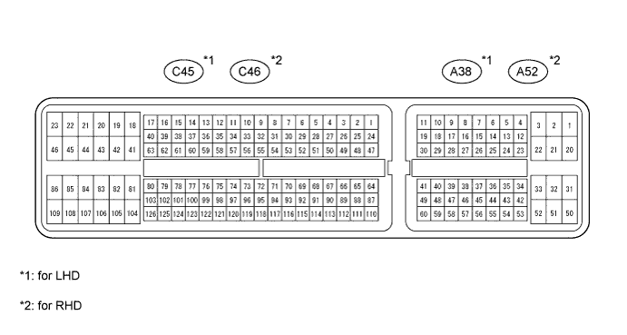
| Terminal No. (Symbol) | Wiring Color | Terminal Description | Condition | Specified Condition |
| A38*1-20 (BATT) - C45*1-81 (E1) A52*2-20 (BATT) - C46*2-81 (E1) | L - BR | Battery (for measuring the battery voltage and for the ECM memory) | Always | 11 to 14 V |
| A38*1-3 (+BM) - C45*1-81 (E1) A52*2-3 (+BM) - C46*2-81 (E1) | P-B - BR | Power source of throttle actuator | Always | 11 to 14 V |
| A38*1-28 (IGSW) - C45*1-81 (E1) A52*2-28 (IGSW) - C46*2-81 (E1) | B - BR | Engine switch | Engine switch on (IG) | 11 to 14 V |
| A38*1-2 (+B) - C45*1-81 (E1) A52*2-2 (+B) - C46*2-81 (E1) | B - BR | Power source of ECM | Engine switch on (IG) | 11 to 14 V |
| A38*1-1 (+B2) - C45*1-81 (E1) A52*2-1 (+B2) - C46*2-81 (E1) | B - BR | Power source of ECM | Engine switch on (IG) | 11 to 14 V |
| C45*1-58 (OC1+) - C45*1-57 (OC1-) C46*2-58 (OC1+) - C46*2-57 (OC1-) | L-B - R-B | Camshaft timing oil control valve (OCV) (bank 1) | Engine switch on (IG) | Pulse generation (See waveform 1) |
| C45*1-52 (OC2+) - C45*1-51 (OC2-) C46*2-52 (OC2+) - C46*2-51 (OC2-) | B - B-L | Camshaft timing oil control valve (OCV) (bank 2) | Engine switch on (IG) | Pulse generation (See waveform 1) |
| A38*1-44 (MREL) - C45*1-81 (E1) A52*2-44 (MREL) - C46*2-81 (E1) | W-R - BR | EFI relay | Engine switch on (IG) | 11 to 14 V |
| C45*1-115 (VCV1) - C45*1-78 (ETHW) C46*2-115 (VCV1) - C46*2-78 (ETHW) | L - BR | Power source of sensor (specific voltage) | Engine switch on (IG) | 4.5 to 5.5 V |
| C45*1-113 (VCV2) - C45*1-74 (ETHA) C46*2-113 (VCV2) - C46*2-74 (ETHA) | L - BR | Power source of sensor (specific voltage) | Engine switch on (IG) | 4.5 to 5.5 V |
| C45*1-72 (VG) - C45*1-73 (E2G) C46*2-72 (VG) - C46*2-73 (E2G) | L-Y - G-W | Mass air flow meter | Idling, shift lever in P or N, A/C switch off | 0.5 to 3.0 V |
| C45*1-71 (THA) - C45*1-74 (ETHA) C46*2-71 (THA) - C46*2-74 (ETHA) | Y-B - BR | Intake air temperature sensor | Idling, intake air temperature 20°C (68°F) | 0.5 to 3.4 V |
| C45*1-79 (THW) - C45*1-78 (ETHW) C46*2-79 (THW) - C46*2-78 (ETHW) | G-B - BR | Engine coolant temperature sensor | Idling, engine coolant temperature 80°C (176°F) | 0.2 to 1.0 V |
| C45*1-96 (VCTA) - C45*1-97 (ETA) C46*2-96 (VCTA) - C46*2-97 (ETA) | L - B | Power source of throttle position sensor (specific voltage) | Engine switch on (IG) | 4.5 to 5.5 V |
| C45*1-98 (VTA1) - C45*1-97 (ETA) C46*2-98 (VTA1) - C46*2-97 (ETA) | R-Y - B | Throttle position sensor (for engine control) | Engine switch on (IG), throttle valve fully closed | 0.5 to 1.2 V |
| Engine switch on (IG), throttle valve fully open | 3.2 to 4.8 V | |||
| C45*1-99 (VTA2) - C45*1-97 (ETA) C46*2-99 (VTA2) - C46*2-97 (ETA) | Y-B - B | Throttle position sensor (for sensor malfunction detection) | Engine switch on (IG), throttle valve fully closed | 2.1 to 3.1 V |
| Engine switch on (IG), throttle valve fully open | 4.5 to 5.0 V | |||
| A38*1-55 (VPA) - A38*1-59 (EPA) A52*2-55 (VPA) - A52*2-59 (EPA) | R - W-L | Accelerator pedal position sensor (for engine control) | Engine switch on (IG), accelerator pedal fully released | 0.5 to 1.1 V |
| Engine switch on (IG), accelerator pedal fully depressed | 2.6 to 4.5 V | |||
| A38*1-56 (VPA2) - A38*1-60 (EPA2) A52*2-56 (VPA2) - A52*2-60 (EPA2) | GR-G - BR | Accelerator pedal position sensor (for sensor malfunction detection) | Engine switch on (IG), accelerator pedal fully released | 1.2 to 2.0 V |
| Engine switch on (IG), accelerator pedal fully depressed | 3.4 to 5.0 V | |||
| A38*1-57 (VCPA) - A38*1-59 (EPA) A52*2-57 (VCPA) - A52*2-59 (EPA) | L-W - W-L | Power source of accelerator pedal position sensor (for VPA) | Engine switch on (IG) | 4.5 to 5.5 V |
| A38*1-58 (VCP2) - A38*1-60 (EPA2) A52*2-58 (VCP2) - A52*2-60 (EPA2) | V - BR | Power source of accelerator pedal position sensor (for VPA2) | Engine switch on (IG) | 4.5 to 5.5 V |
| C45*1-86 (HA1A) - C45*1-23 (E04) C46*2-86 (HA1A) - C46*2-23 (E04) | L-R - W-B | Air fuel ratio (A/F) sensor heater | Idling | Below 3.0 V |
| C45*1-109 (HA2A) - C45*1-46 (E05) C46*2-109 (HA2A) - C46*2-46 (E05) | G - W-B | Engine switch on (IG) | 11 to 14 V | |
| C45*1-93 (A1A+) - C45*1-81 (E1) C46*2-93 (A1A+) - C46*2-81 (E1) | G - BR | A/F sensor | Engine switch on (IG) | 3.3 V*3 |
| C45*1-120 (A2A+) - C45*1-81 (E1) C46*2-120 (A2A+) - C46*2-81 (E1) | V - BR | A/F sensor | Engine switch on (IG) | 3.3 V*3 |
| C45*1-116 (A1A-) - C45*1-81 (E1) C46*2-116 (A1A-) - C46*2-81 (E1) | R - BR | A/F sensor | Engine switch on (IG) | 2.9 V*3 |
| C45*1-119 (A2A-) - C45*1-81 (E1) C46*2-119 (A2A-) - C46*2-81 (E1) | P - BR | A/F sensor | Engine switch on (IG) | 2.9 V*3 |
| C45*1-48 (HT1B) - C45*1-104 (E03) C46*2-48 (HT1B) - C46*2-104 (E03) | G - BR | Heated oxygen sensor heater | Idling | Below 3.0 V |
| C45*1-47 (HT2B) - C45*1-104 (E03) C46*2-47 (HT2B) - C46*2-104 (E03) | B - BR | Engine switch on (IG) | 11 to 14 V | |
| C45*1-88 (OX1B) - C45*1-65 (EX1B) C46*2-88 (OX1B) - C46*2-65 (EX1B) | W - BR | Heated oxygen sensor | Engine speed maintained at 2500 rpm for 2 minutes after warming up engine | Pulse generation (See waveform 2) |
| C45*1-87 (OX2B) - C45*1-64 (EX2B) C46*2-87 (OX2B) - C46*2-64 (EX2B) | B - BR | |||
| C45*1-45 (#10) - C45*1-22 (E01) C46*2-45 (#10) - C46*2-22 (E01) | R-L - W-B | Fuel injector | Engine switch on (IG) | 11 to 14 V |
| C45*1-85 (#20) - C45*1-22 (E01) C46*2-85 (#20) - C46*2-22 (E01) | L - W-B | |||
| C45*1-44 (#30) - C45*1-22 (E01) C46*2-44 (#30) - C46*2-22 (E01) | R-B - W-B | |||
| C45*1-84 (#40) - C45*1-22 (E01) C46*2-84 (#40) - C46*2-22 (E01) | Y - W-B | Idling | Pulse generation (See waveform 3) | |
| C45*1-43 (#50) - C45*1-22 (E01) C46*2-43 (#50) - C46*2-22 (E01) | G - W-B | |||
| C45*1-83 (#60) - C45*1-22 (E01) C46*2-83 (#60) - C46*2-22 (E01) | R - W-B | |||
| C45*1-95 (KNK1) - C45*1-94 (EKNK) C46*2-95 (KNK1) - C46*2-94 (EKNK) | G - R | Knock sensor (bank 1) | Engine speed maintained at 4000 rpm after warming up engine | Pulse generation (See waveform 4) |
| C45*1-118 (KNK2) - C45*1-117 (EKN2) C46*2-118 (KNK2) - C46*2-117 (EKN2) | W - B | Knock sensor (bank 2) | Engine speed maintained at 4000 rpm after warming up engine | Pulse generation (See waveform 4) |
| C45*1-69 (VV1+) - C45*1-92 (VV1-) C46*2-69 (VV1+) - C46*2-92 (VV1-) | R - L-R | Variable Valve Timing (VVT) sensor (bank 1) | Idling | Pulse generation (See waveform 5) |
| C45*1-67 (VV2+) - C45*1-90 (VV2-) C46*2-67 (VV2+) - C46*2-90 (VV2-) | R - G | Variable Valve Timing (VVT) sensor (bank 2) | Idling | Pulse generation (See waveform 5) |
| C45*1-110 (NE+) - C45*1-111 (NE-) C46*2-110 (NE+) - C46*2-111 (NE-) | B - W | Crankshaft position sensor | Idling | Pulse generation (See waveform 5) |
| C45*1-40 (IGT1) - C45*1-81 (E1) C46*2-40 (IGT1) - C46*2-81 (E1) | B-R - BR | Ignition coil (ignition signal) | Idling | Pulse generation (See waveform 6) |
| C45*1-39 (IGT2) - C45*1-81 (E1) C46*2-39 (IGT2) - C46*2-81 (E1) | L-B - BR | |||
| C45*1-38 (IGT3) - C45*1-81 (E1) C46*2-38 (IGT3) - C46*2-81 (E1) | B - BR | |||
| C45*1-37 (IGT4) - C45*1-81 (E1) C46*2-37 (IGT4) - C46*2-81 (E1) | L-B - BR | |||
| C45*1-36 (IGT5) - C45*1-81 (E1) C46*2-36 (IGT5) - C46*2-81 (E1) | G-R - BR | |||
| C45*1-35 (IGT6) - C45*1-81 (E1) C46*2-35 (IGT6) - C46*2-81 (E1) | G - BR | |||
| C45*1-106 (IGF1) - C45*1-81 (E1) C46*2-106 (IGF1) - C46*2-81 (E1) | G-B - BR | Ignition coil (ignition confirmation signal) | Engine switch on (IG) | 4.5 to 5.5 V |
| Idling | Pulse generation (See waveform 6) | |||
| C45*1-108 (PRG) - C45*1-81 (E1) C46*2-108 (PRG) - C46*2-81 (E1) | L-B - BR | Purge VSV | Engine switch on (IG) | 11 to 14 V |
| Idling | Pulse generation (See waveform 7) | |||
| A38*1-8 (SPD) - C45*1-81 (E1) A52*2-8 (SPD) - C46*2-81 (E1) | V-R - BR | Speed signal from combination meter | Engine switch on (IG), wheel rotated slowly | Pulse generation (See waveform 8) |
| A38*1-48 (STA) - C45*1-81 (E1) A52*2-48 (STA) - C46*2-81 (E1) | R-B - BR | Starter signal | Cranking | 11 to 14 V |
| A38*1-36 (STP) - C45*1-81 (E1) A52*2-36 (STP) - C46*2-81 (E1) | R - BR | Stop light switch | Brake pedal depressed | 7.5 to 14 V |
| Brake pedal released | Below 1.5 V | |||
| A38*1-35 (ST1-) - C45*1-81 (E1) A52*2-35 (ST1-) - C46*2-81 (E1) | R-W - BR | Stop light switch (opposite to STP terminal) | Engine switch on (IG), brake pedal depressed | Below 1.5 V |
| Engine switch on (IG), brake pedal released | 7.5 to 14 V | |||
| C45*1-62 (NSW) - C45*1-81 (E1) C46*2-62 (NSW) - C46*2-81 (E1) | L - BR | Park/neutral position switch | Engine switch on (IG), shift lever in P or N | Below 3.0 V |
| Engine switch on (IG), shift lever in other than P or N | 11 to 14 V | |||
| C45*1-19 (M+) - C45*1-20 (ME01) C46*2-19 (M+) - C46*2-20 (ME01) | R - W-B | Throttle actuator | Idling with warm engine | Pulse generation (See waveform 9) |
| C45*1-18 (M-) - C45*1-20 (ME01) C46*2-18 (M-) - C46*2-20 (ME01) | G - W-B | Throttle actuator | Idling with warm engine | Pulse generation (See waveform 10) |
| A38*1-7 (FC) - C45*1-81 (E1) A52*2-7 (FC) - C46*2-81 (E1) | L-R - BR | Fuel pump control | Engine switch on (IG) | 11 to 14 V |
| A38*1-24 (W) - C46*2-81 (E1) A52*2-24 (W) - C46*2-81 (E1) | R-Y - BR | MIL | Engine switch on (IG) | Below 3.0 V |
| Idling | 11 to 14 V | |||
| A38*1-27 (TC) - C45*1-81 (E1) A52*2-27 (TC) - C46*2-81 (E1) | V-W - BR | Terminal TC of DLC3 | Engine switch on (IG) | 11 to 14 V |
| A38*1-15 (TACH) - C45*1-81 (E1) A52*2-15 (TACH) - C46*2-81 (E1) | W-G - BR | Engine speed | Idling | Pulse generation (See waveform 11) |
| C45*1-107 (ACIS) - C45*1-81 (E1) C46*2-107 (ACIS) - C46*2-81 (E1) | R-W - BR | VSV for ACIS | Engine switch on (IG) | 11 to 14 V |
| C45*1-70 (PSW) - C45*1-81 (E1) C46*2-70 (PSW) - C46*2-81 (E1) | L - BR | P/S pressure switch | Engine switch on (IG) | 11 to 14 V |
| A38*1-41 (CANH) - C45*1-81 (E1) A52*2-41 (CANH) - C46*2-81 (E1) | P - BR | CAN communication line | Engine switch on (IG) | Pulse generation (See waveform 12) |
| A38*1-49 (CANL) - C45*1-81 (E1) A52*2-49 (CANL) - C46*2-81 (E1) | B - BR | CAN communication line | Engine switch on (IG) | Pulse generation (See waveform 13) |
| C45*1-59 (FPC) - C45*1-81 (E1) C46*2-59 (FPC) - C46*2-81 (E1) | W-G - BR | Fuel pump control | Engine switch on (IG) | 11 to 14 V |
| A38*1-19 (DI) - C45*1-81 (E1) A52*2-19 (DI) - C46*2-81 (E1) | G-Y - BR | Fuel pump control | Engine switch on (IG) | 0 to 3.0 V |
| A38*1-14 (STSW) - C45*1-81 (E1) A52*2-14 (STSW) - C46*2-81 (E1) | R - BR | Engine switch signal | Shift lever in P or N, engine cranking | 6.0 V or more |
| A38*1-13 (ACCR) - C45*1-81 (E1) A52*2-13 (ACCR) - C46*2-81 (E1) | L-Y - BR | ACC (accessory) relay control signal | Cranking | Below 1.5 V |
| C45*1-63 (STAR) - C45*1-81 (E1) C46*2-63 (STAR) - C46*2-81 (E1) | L - BR | Starter relay control | Engine switch on (IG) | Below 1.5 V |
| Cranking | 6.0 V or more |
| WAVEFORM 1 |
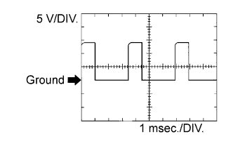 |
| ECM Terminal Name | Between OC1+ and OC1- or OC2+ and OC2- |
| Tester Range | 5 V/DIV., 1 msec./DIV., |
| Condition | Idling |
| WAVEFORM 2 |
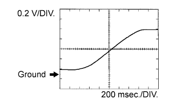 |
| ECM Terminal Name | Between OX1B and EX1B or OX2B and EX2B |
| Tester Range | 0.2 V/DIV., 200 msec./DIV. |
| Condition | Engine speed maintained at 2500 rpm for 2 minutes after warming up engine |
| WAVEFORM 3 |
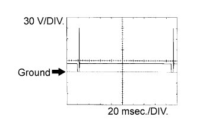 |
| ECM Terminal Name | Between #10 (to #60) and E01 |
| Tester Range | 30 V/DIV., 20 msec./DIV. |
| Condition | Idling |
| WAVEFORM 4 |
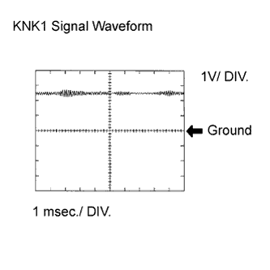 |
| ECM Terminal Name | Between KNK1 and EKNK or KNK2 and EKN2 |
| Tester Range | 1 V/DIV., 0.01 to 1 msec./DIV. |
| Condition | Engine speed maintained at 4000 rpm after warming up engine |
| WAVEFORM 5 |
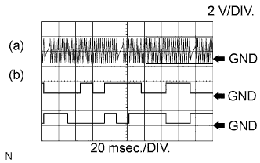 |
Crankshaft position sensor
VVT sensor
| ECM Terminal Name | (a) Between NE+ and NE- (b) Between VV1+ and VV1- or VV2+ and VV2- |
| Tester Range | 2 V/DIV., 20 msec./DIV. |
| Condition | Idling |
| WAVEFORM 6 |
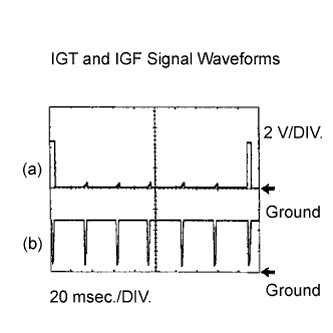 |
Igniter IGT signal (from ECM to igniter)
Igniter IGF signal (from igniter to ECM)
| ECM Terminal Name | (a) Between IGT (1 to 6) and E1 (b) Between IGF1 and E1 |
| Tester Range | 2 V/DIV., 20 msec./DIV. |
| Condition | Idling |
| WAVEFORM 7 |
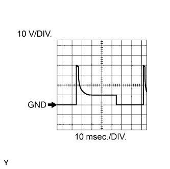 |
| ECM Terminal Name | Between PRG and E1 |
| Tester Range | 10 V/DIV., 10 to 100 msec./DIV. |
| Condition | Idling |
| WAVEFORM 8 |
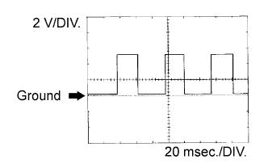 |
| ECM Terminal Name | Between SPD and E1 |
| Tester Range | 2 V/DIV., 20 msec./DIV. |
| Condition | Engine switch on (IG), wheel rotated slowly |
| WAVEFORM 9 |
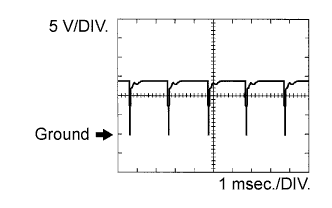 |
| ECM Terminal Name | Between M+ and ME01 |
| Tester Range | 5 V/DIV., 1 msec./DIV. |
| Condition | Idling with warm engine |
| WAVEFORM 10 |
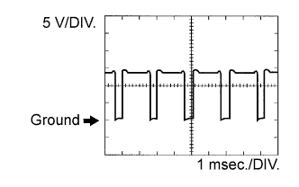 |
| ECM Terminal Name | Between M- and ME01 |
| Tester Range | 5 V/DIV., 1 msec./DIV. |
| Condition | Idling with warm engine |
| WAVEFORM 11 |
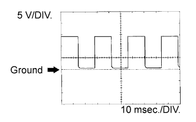 |
| ECM Terminal Name | Between TACH and E1 |
| Tester Range | 5 V/DIV., 10 msec./DIV. |
| Condition | Idling |
| WAVEFORM 12 |
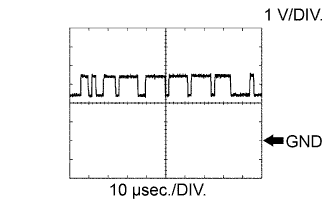 |
| ECM Terminal Name | Between CANH and E1 |
| Tester Range | 1 V/DIV., 10 μsec./DIV. |
| Condition | Engine switch on (IG) |
| WAVEFORM 13 |
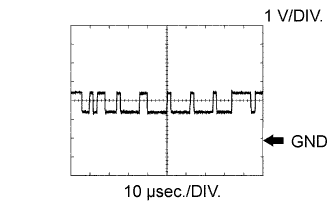 |
| ECM Terminal Name | Between CANL and E1 |
| Tester Range | 1 V/DIV., 10 μsec./DIV. |
| Condition | Engine switch on (IG) |